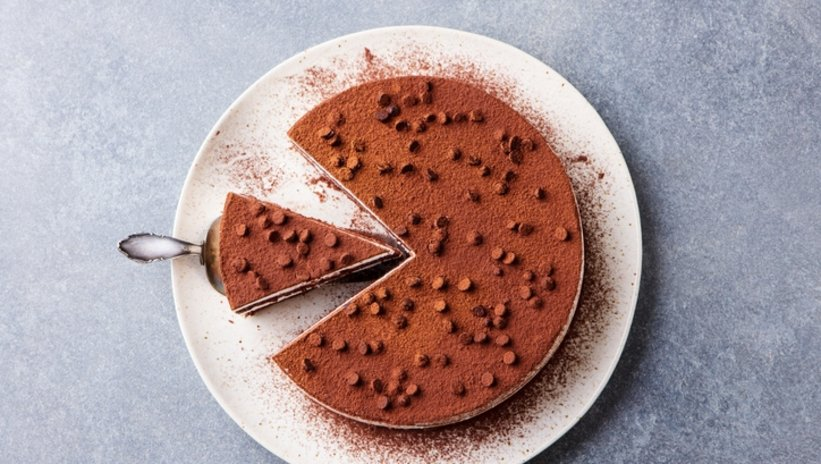

Bir İtalyan tatlısı olan tiramisu, ülkemizde de gittikçe popülerleşmeye başlayan bir tatlıdır. Görüntüsüyle şahane, çayın da kahvenin de yanında giden bu labneli tatlının pratik tarifi sizlerle! Evde tiramisu nasıl yapılır?
Kaç Kisilik:4 Kisilik Hazırlama Süresi:30 Dakika
Tiramisu Nasil Yapilir?
Afiyet olsun!